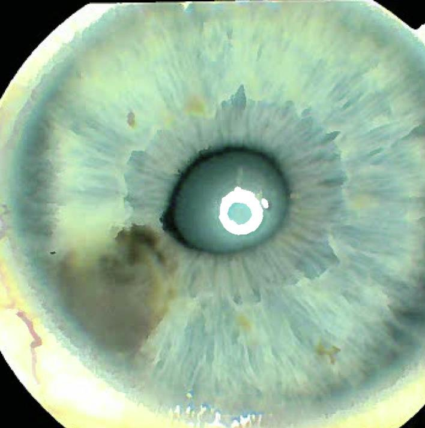
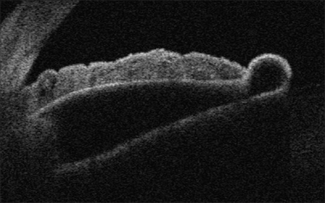
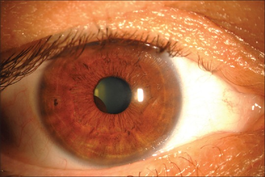
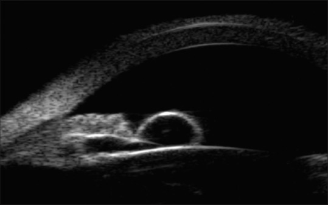
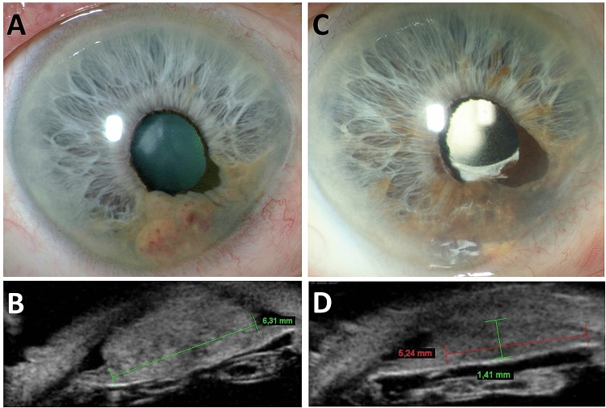
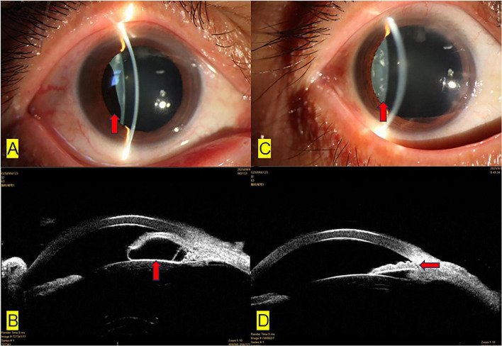

3231 — U sắc tố mống mắt: melanoma – nevus – nang biểu mô sắc tố trên UBM/AS-OCT / Iris melanocytic lesions: melanoma vs nevus vs iris cyst
Tags: pattern:khoi-mong-mat pattern:sac-to-mong-mat pattern:nang-mong-mat pattern:day-mong-mat pattern:ectropion-uveae vung:mat vung:mong-mat vung:tien-phong vung:goc-tien-phong protocol:UBM-35-50MHz protocol:AS-OCT protocol:AS-OCTA protocol:sinh-thiet-FNAB score:ABCDEF incidentaloma:khong
Mức chắc chắn (certainty): tổng hợp y văn (literature synthesis) — dựng từ đoàn hệ lớn về nevus mống mắt (1.611 mắt, Ophthalmology 2013, PMID 23290981), melanoma mống mắt có mô bệnh (169 mắt, Ophthalmology 2001, PMID 11150284), đoàn hệ điều trị 300 mắt (Can J Ophthalmol 2024, PMID 38040029) và 166 mắt proton (Ophthalmol Retina 2023, PMID 36087876), cùng các ca nguyên văn có ảnh mở (PMCID ghi tại từng ảnh). Nhóm không có bệnh nhân của mình; chỗ chưa đủ chắc ghi "chưa rõ". Không ghi tên tác giả — attribution dùng tạp chí + năm + PMCID/PMID.
1. Tổng quan bệnh học – cơ chế hình ảnh
Giải phẫu – mô học quyết định hình ảnh. Mống mắt gồm lớp đệm (stroma) có tế bào sắc tố và mạch máu, phía sau là hai lớp biểu mô sắc tố (biểu mô sắc tố trước kiểu cơ, biểu mô sắc tố sau). Tổn thương sắc tố mống mắt là tăng sinh tế bào hắc tố (nevus → melanoma, melanocytoma) hoặc tổn thương không phải hắc tố (nang, di căn, adenoma, Lisch). Chính melanin — hạt hấp thụ ánh sáng mạnh và phản xạ ngược sóng siêu âm — tạo ra toàn bộ "chữ ký" hình ảnh của nhóm bệnh này.
TẠI SAO UBM nhìn rõ u sắc tố. Siêu âm tần số cao 35–50 MHz có độ phân giải trục ~50 µm, xuyên thấu 4–5 mm: đủ để đo độ dày u, bờ sau, xâm lấn thể mi và quan hệ với góc tiền phòng. Melanin phản xạ mạnh ở bề mặt u và làm suy giảm chùm siêu âm phía sau, nên melanoma điển hình là khối đặc, hồi âm trong thấp–trung bình, bề mặt sáng, có bóng phía sau; nang dịch thì hoàn toàn trống hồi âm vì nước không có mặt phân cách phản xạ.
TẠI SAO AS-OCT nhanh nhưng dễ "đo hụt". AS-OCT dùng ánh sáng gần hồng ngoại, độ phân giải trục 5–7 µm, không tiếp xúc, chịu được giác mạc mờ nhẹ. Nhưng melanin hấp thụ và tán xạ ánh sáng: khối sắc tố hiện tăng phản xạ mạnh ở mặt trước kèm bóng tối (posterior shadowing) phía sau, nên không đo được hết độ dày của u dày/sẫm màu. Vì vậy AS-OCT và UBM chỉ tương đương ở u có đáy < 2,5 mm và dày < 2 mm; vượt ngưỡng đó — hoặc nghi xâm lấn thể mi — UBM là chuẩn.
Hai con số vàng phân biệt nevus – melanoma (đo trên cùng một phương tiện). Trong 1.611 mắt nevus được theo dõi: đường kính đáy trung bình 3 mm, độ dày trung bình 0,8 mm (trung vị 0,5 mm, khoảng 0–5 mm). Trong 169 mắt melanoma có mô bệnh: đáy trung bình 6 mm (1–17 mm), dày trung bình 2 mm (1–4 mm). Nói cách khác, dày ≥ 1 mm là cờ đỏ, nhưng vùng 1–2 mm vẫn chồng lấp — không có ngưỡng nào thay thế được theo dõi tăng kích thước.
Động học "nevus hóa melanoma" — chậm nhưng không hiếm. Trong 1.611 nevus, 2% (27 mắt) tăng sinh thành melanoma sau theo dõi trung bình 68 tháng; Kaplan–Meier 3% lúc 5 năm, 4% lúc 10 năm, 8% lúc 15 năm, 11% lúc 20 năm. Yếu tố dự báo (đa biến): tuổi ≤ 40 (HR 3), xuất huyết tiền phòng (HR 9), vị trí 4–9 giờ (HR 9), thể lan tỏa toàn mống mắt (HR 14), ectropion uveae (HR 4), bờ lông vũ (HR 3) — mnemonic ABCDEF.
Dịch tễ và tiên lượng ung thư. Melanoma mống mắt chiếm ~2–4% u hắc mạc; khác u hắc mạc hậu cực, đây là thể duy nhất có liên quan tia cực tím (đoàn hệ 86 bệnh nhân Queensland: 63% nữ, tuổi trung bình 54, 97% da trắng, 77% thể tế bào hình thoi, 1 ca di căn trong theo dõi trung bình 8 năm). Di căn 5% lúc 10 năm, 10% lúc 20 năm (169 mắt có mô bệnh); yếu tố nguy cơ: tuổi cao, nhãn áp tăng, bờ sau ở góc/rễ mống mắt, lan ra ngoài củng mạc, đã được mổ/sinh thiết ở nơi khác trước đó.
Vì sao mắt "đau" và "mờ" — cơ chế nhãn áp. U xâm lấn bè củng mạc – góc tiền phòng làm tắc dòng thủy dịch; melanoma mống mắt có nhãn áp 18,8 ± 6,1 mmHg so với nevus 14,6 ± 3,5 mmHg (P < 0,001), C/D 0,36 ± 0,27 so với 0,24 ± 0,14 (P = 0,02), và 30,8% đã có glôcôm thứ phát lúc khám. Vì thế bất đối xứng nhãn áp/C-D là manh mối rẻ tiền nhưng không đặc hiệu (AUC < 0,70).
Nang mống mắt hình thành thế nào. Nang biểu mô sắc tố (IPE cyst) là khoang dịch giữa hai lớp biểu mô sắc tố, vách rất mỏng; nang lớp đệm (stromal cyst) thường là nang cấy ghép sau chấn thương/phẫu thuật (tế bào biểu mô bị đưa vào tiền phòng). Nang nguyên phát thường một bên, nhiều ổ, ở vùng midzone hoặc ngoại vi, và thay đổi kích thước theo giãn đồng tử — đặc điểm sinh lý này là chìa khóa để không gọi nhầm là u đặc.
2. Mẫu hình + chẩn đoán phân biệt theo vị trí (Gamut)
Dạng 1 — đốm/nốt phẳng, sắc tố đều: tàn nhang mống mắt (iris freckle), nevus mống mắt, melanocytoma mống mắt (hiếm, rất sẫm, dẹt), nốt Lisch (NF1: nốt nhỏ dạng vòm, cùng màu mống mắt, thường hai bên), mammillation mống mắt (hai bên, đối xứng, dạng "nan hoa"). Đặc điểm chung: không dày đáng kể, không mạch nội u, không xâm lấn góc.
Dạng 2 — khối vòm đặc, phát triển: melanoma mống mắt (bờ lông vũ, tân mạch nuôi, ectropion uveae, gieo hạt góc), di căn mống mắt (thường không sắc tố, nhiều mạch, kèm viêm), adenoma/adenocarcinoma biểu mô sắc tố (đặc trung tâm, xuất phát từ lớp biểu mô), melanoma thể mi lan ra sau mống mắt.
Dạng 3 — tổn thương dạng nang: nang IPE nguyên phát (midzone/ngoại vi/trung tâm), nang lớp đệm/cấy ghép, nang thứ phát sau chấn thương, phẫu thuật, viêm màng bồ đào, hoặc do thuốc (prostaglandin).
Dạng 4 — lan tỏa, không có "khối": melanoma mống mắt thể lan tỏa, ring melanoma (dày toàn chu vi, hay bị chẩn đoán nhầm là glôcôm một mắt), melanocytosis mống mắt (bẩm sinh, dày không đều, sắc tố đậm).
Gamut theo vị trí: bờ đồng tử → melanoma (ectropion uveae, corectopia), nang trung tâm; vùng midzone → nang IPE điển hình; rễ mống mắt/góc → melanoma xâm lấn góc, ring melanoma, melanoma thể mi; vùng dưới (4–9 giờ) → nevus hay gặp (74% nevus ở góc phần tư dưới) nhưng cũng là vị trí nguy cơ cao nếu nevus tăng sinh.
Gợi nhớ cờ đỏ ABCDEF: Age young (tuổi ≤ 40), Blood (xuất huyết tiền phòng), Clock hour inferior (4–9 giờ), Diffuse (lan tỏa), Ectropion uveae, Feathery margin (bờ lông vũ).
3. Bảng so sánh phân biệt (ma trận đối chiếu)
| Thực thể (entity) | Hình ảnh điển hình | Chốt vào (rule-in) | Chốt loại (rule-out) | Gợi ý xác nhận |
|---|---|---|---|---|
| Nevus mống mắt | Đốm/nốt sắc tố dẹt, bờ rõ, không mạch nội u; đáy trung bình 3 mm, dày 0,8 mm | Dày < 1 mm, không đổi sau ≥ 2 lần khám cách ≥ 2 năm, không ectropion | Dày ≥ 1 mm, bờ lông vũ, tân mạch nuôi → nghi melanoma | Ảnh chuẩn hóa + UBM mỗi 6–12 tháng |
| Melanoma mống mắt | Khối vòm dày ≥ 1 mm (trung bình 2 mm), bờ lông vũ, tân mạch, ectropion uveae, gieo hạt góc | Tăng kích thước có ghi nhận; dày ≥ 1 mm + ≥ 1 cờ ABCDEF; xâm lấn góc | Nang trống hồi âm, vách mỏng, đổi theo đồng tử → nang | UBM + ảnh chuẩn hóa; sinh thiết khi đổi điều trị |
| Nang IPE | Cấu trúc trống hồi âm/giảm phản xạ, vách mỏng, nằm sau mống mắt, nhiều ổ, một bên | Trống hồi âm hoàn toàn + vách mỏng + thay đổi theo giãn đồng tử (1.440 µm AS-OCT trước giãn → 300 µm UBM sau giãn) | Có thành phần đặc bên trong, ngấm thuốc → u đặc | AS-OCT + UBM trước và sau giãn đồng tử |
| Nang lớp đệm/cấy ghép | Nang thành dày hơn, thường một ổ, tiền sử chấn thương/mổ, dính bờ đồng tử | Tiền sử thủng nhãn cầu/mổ + nang một ổ thành dày | Nhiều nang hai bên không tiền sử → nang IPE nguyên phát | UBM, hỏi tiền sử; tế bào biểu mô trên tế bào học |
| Di căn mống mắt | Khối không sắc tố, nhiều mạch, kèm viêm tiền phòng, có thể hai bên; 8% di căn nội nhãn ở mống mắt | Tiền sử ung thư (67–76% đã biết) + tổn thương mạch máu, viêm | Sắc tố đậm, bờ rõ, không viêm → nevus/melanoma | Sinh thiết, PET/CT, phối hợp ung thư |
| Nốt Lisch / mammillation | Nhiều nốt nhỏ dạng vòm, cùng màu mống mắt, hai bên, đối xứng | Hai bên + nhiều nốt + NF1 hoặc không thay đổi nhiều năm | Một tổn thương đơn độc, sẫm màu, dày tiến triển → u | Khám da, tiền sử gia đình NF1; theo dõi ảnh |
| Adenoma biểu mô sắc tố | Khối đặc trung tâm, xuất phát từ lớp biểu mô, có thể gây đục thể thủy tinh/lệch thủy tinh thể | Đặc, không phải nang, phát triển chậm | Trống hồi âm + vách mỏng → nang | Mô bệnh sau cắt |
| Melanoma thể mi lan ra | Khối sau mống mắt, đẩy mống mắt ra trước, góc hẹp; 58,3% ca "iris melanoma" điều trị plaque có xâm lấn thể mi | UBM thấy khối liên tục từ thể mi + đẩy rễ mống mắt | Chỉ dày lớp đệm mống mắt, bờ sau rõ → melanoma mống mắt thuần | UBM 35–50 MHz bắt buộc; đo độ dày và bờ sau |

Nevus sắc tố mống mắt mắt trái — tổn thương dẹt, bờ tương đối rõ, không thấy mạch nuôi. Nguồn: Case Rep Ophthalmol 2016, PMCID PMC5075749, CC BY-NC 4.0. Nguyên bản, không crop.Ba dấu hiệu đọc ảnh theo thứ tự
- Đo độ dày (mm) ở điểm dày nhất, cùng một phương tiện, cùng một độ giãn đồng tử — nevus 0,8 mm vs melanoma 2 mm.
- Trong lòng có gì? Trống hoàn toàn + vách mỏng = nang; đặc + hồi âm trong thấp = melanoma; đặc + hồi âm trong cao/không đều = adenoma/di căn.
- Bờ sau và góc: u có bờ sau rõ, không chạm thể mi thì xử trí tại mống mắt; mất mặt phẳng sau, đẩy thể mi thì phải tính phẫu thuật/xạ rộng hơn.

AS-OCT trước giãn đồng tử: khối dạng nang bờ rõ ở mặt sau mống mắt, dày 1.440 µm ở ngoại vi, lớp đệm mống mắt phía trước bình thường. Nguồn: Oman J Ophthalmol 2018, PMCID PMC5991049, CC BY-NC-SA 4.0. Nguyên bản.4. Protocol chụp + hệ phân độ/điểm chuẩn hóa
4.1 Chụp và đo
- Ảnh mống mắt chuẩn hóa (slit lamp) mỗi lần khám: cùng đèn, cùng góc, ghi rõ độ giãn đồng tử; đo đường kính đáy lớn nhất và số giờ tổn thương.
- AS-OCT tiền đoạn trước: không tiếp xúc, 5–7 µm, tốt cho bờ trước, bề mặt, nang nhỏ; chấp nhận được khi giác mạc mờ nhẹ.
- UBM 35–50 MHz khi: dày > 2 mm hoặc đáy > 2,5 mm, sắc tố đậm có bóng, nghi xâm lấn thể mi, xuất huyết tiền phòng, giác mạc mờ, hoặc cần bản đồ bờ sau để mổ/xạ. Quét vuông góc qua đường kính lớn nhất, ghi cả bờ sau và khoảng cách tới thể mi.
- Nang: bắt buộc chụp trước và sau giãn đồng tử — nang thay đổi kích thước theo đồng tử, u đặc thì không. Ca minh họa: 1.440 µm trên AS-OCT trước giãn → 300 µm trên UBM sau giãn (khác cả phương tiện lẫn độ giãn — vì thế phải so cùng phương tiện, cùng độ giãn).
- Gonioscopy tìm gieo hạt ở góc; nhãn áp hai mắt, C/D hai mắt (bất đối xứng gợi ý u xâm lấn góc); soi đáy mắt loại trừ u hắc mạc kèm theo.
- Sinh thiết (FNAB/incisional) không làm thường quy: nguy cơ gieo hạt tế bào, chẩn đoán không đủ mẫu; chỉ đặt ra khi kết quả làm thay đổi điều trị (đặc biệt để xét nghiệm tiên lượng). Hướng dẫn ESMO–EURACAN 2026 yêu cầu thảo luận nguy cơ gieo hạt với bệnh nhân trước sinh thiết.
4.2 Phân độ và ngưỡng xử trí
- AJCC 8th (u hắc mạc tiền đoạn): T1 = giới hạn trong mống mắt (chia a/b/c theo số giờ và gieo hạt/xuất huyết), T2 = đã xâm lấn thể mi; các bậc cao hơn thêm hắc mạc và lan ra ngoài củng mạc. Trong đoàn hệ 39 melanoma, 38,5% T1, 61,5% T2 lúc chẩn đoán — cho thấy UBM bờ sau là bắt buộc, vì hơn nửa đã vượt khỏi mống mắt.
- Theo dõi (observation) khi: nevus dày < 1 mm, không cờ ABCDEF, không xâm lấn góc — ảnh + UBM mỗi 6–12 tháng; nevus chỉ chuyển melanoma 2% trong 68 tháng.
- Điều trị tại chỗ khi có tăng kích thước có ghi nhận, dày ≥ 1 mm kèm cờ đỏ, hoặc xâm lấn góc/gây glôcôm:
- Plaque brachytherapy I-125: 85 Gy tới đỉnh u + biên 2 mm (12 mắt; đáy trung vị 4,40 mm, dày 1,78 mm; 58,3% có xâm lấn thể mi; đục thủy tinh thể 33%, khô mắt 16,7%, tái phát 8% do một ca ring melanoma).
- Proton beam (166 mắt T1): tái phát tại chỗ 1,2%, múc nhãn cầu 3%, không ca di căn; chiếu > 10 giờ làm tăng glôcôm thứ phát (HR 6,3) và can thiệp phẫu thuật (HR 10,85).
- Cắt u bảo tồn nhãn cầu (iridectomy/iridocyclectomy) cho u khu trú; múc nhãn cầu cho thể lan tỏa/ring melanoma có glôcôm.
- Kết cục sống còn (300 mắt): sống không di căn 95% / 93% / 87% lúc 5/10/20 năm; cắt u 98/97/94% so với plaque 94/94/89% (không thua kém); giữ mắt 90% vs 86% lúc 20 năm; xâm lấn thể mi không làm tăng di căn trong đoàn hệ này (P = 0,95) — xem mục 7.
- Theo dõi sau điều trị: mỗi 6 tháng trong 2–5 năm đầu, sau đó hằng năm; ảnh màu phát hiện 98% tái phát tại chỗ; tái phát tại chỗ chung 7,3% lúc 5 năm; biến chứng đoạn trước hay gặp nhất là đục thủy tinh thể và khô mắt.
flowchart TD
A[Khối sắc tố mống mắt] --> B{Trống hồi âm và vách mỏng?}
B -->|Có| C[Nang: AS-OCT + UBM trước và sau giãn đồng tử]
C --> D{Có triệu chứng hoặc góc hẹp?}
D -->|Không| E[Theo dõi ảnh 6-12 tháng]
D -->|Có| F[Cắt nang / laser / dẫn lưu]
B -->|Không| G{Đo dày trên UBM}
G -->|Dưới 1 mm, không cờ đỏ| H[Nevus: theo dõi 6-12 tháng]
G -->|Từ 1 mm hoặc có cờ ABCDEF| I[Melanoma nghi ngờ: UBM bờ sau + gonioscopy]
I --> J{Xâm lấn thể mi hoặc góc?}
J -->|Không| K[Plaque I-125 85 Gy hoặc cắt u bảo tồn]
J -->|Có| L[Xạ proton/plaque rộng hoặc múc nhãn cầu]
5. Biến thể bình thường và cạm bẫy
- Tàn nhang mống mắt (iris freckle) — dẹt, không dày, không đổi; đừng chụp UBM "cho có" rồi gọi nhầm "theo dõi u".
- Mammillation mống mắt — nhiều gờ nhỏ đối xứng hai bên, giãn đồng tử thấy rõ; không phải nang, không phải melanoma.
- Nốt Lisch (NF1) — cùng màu mống mắt, hai bên; nếu một tổn thương sẫm màu, đơn độc, dày lên thì đó không phải Lisch.
- Nang đổi kích thước theo đồng tử — đo sau giãn đồng tử rồi kết luận "u nhỏ đi" là sai; luôn so cùng điều kiện.
- Bóng phía sau trên AS-OCT — khối sắc tố dày bị che, đo được 1 mm trong khi UBM 2,5 mm; AS-OCT không dùng để loại trừ melanoma dày.
- Ring melanoma — không có khối, chỉ dày lan tỏa + nhãn áp cao một mắt; bệnh nhân bị theo dõi "glôcôm một mắt" nhiều tháng, đến khi UBM thấy dày toàn chu vi. Đây là lý do phải UBM khi nhãn áp một mắt cao không giải thích được.
- Nang "mọc sau mống mắt" — hình vòm đẩy mống mắt ra trước, dễ gọi là melanoma thể mi; trống hồi âm + vách mỏng + đổi theo đồng tử loại trừ.
- Tiền sử can thiệp ở nơi khác — mổ/sinh thiết u trước khi chuyển tuyến là yếu tố nguy cơ di căn độc lập (P = 0,006); đừng "đốt laser cho gọn" một nevus chưa chẩn đoán chắc.
- Bỏ sót thể mi — 58,3% ca được xếp "iris melanoma" trong một đoàn hệ điều trị plaque có xâm lấn thể mi; thiếu UBM bờ sau là thiếu một nửa chẩn đoán.
6. Tự lượng giá — Blind Quiz
Ca 1 — Nam 49 tuổi, khối nâu "nghi melanoma thể mi" ở mống mắt phải. Nhìn ảnh trước, mô tả trước khi mở đáp án.

- Gợi ý: tổn thương nằm sau mống mắt từ 6:30 đến 9:00, không thấy mạch nuôi, không ectropion.
- Câu hỏi: Đây là khối đặc hay nang? Cần thêm hai thao tác/manh mối nào để chốt? Đo độ dày bằng phương tiện nào?
Bấm để hiện đáp án (findings + chẩn đoán)
- Hình đèn khe trước giãn đồng tử chỉ thấy bóng nâu khu trú; sau giãn đồng tử tổn thương lộ rõ dạng thoi dài — gợi ý thành phần sau mống mắt, thay đổi theo đồng tử.
- AS-OCT trước giãn: khối dạng nang, bờ rõ, trống phản xạ bên trong, dày 1.440 µm ở ngoại vi.
- UBM sau giãn: cấu trúc trống hồi âm dài, vách mỏng, dày 300 µm — không có thành phần đặc, không có khối thể mi.
- Chẩn đoán: nang biểu mô sắc tố mống mắt vùng midzone (midzonal IPE cyst) + 3 nang ngoại vi nhỏ ở mắt trái; theo dõi, không can thiệp.
- Bài học: kích thước thay đổi theo đồng tử + trống hồi âm là chốt loại u đặc; đo trước và sau giãn đồng tử trên cùng phương tiện.

- Nguồn ảnh: Oman J Ophthalmol 2018, PMCID PMC5991049, CC BY-NC-SA 4.0 (nguyên bản, không crop).
Ca 2 — Bệnh nhân 85 tuổi, tổn thương mống mắt theo dõi 7 năm, nay nghi to ra; UBM có thước đo.

- Gợi ý: (A) ảnh đèn khe; (B) UBM trước điều trị với thước đo; (C, D) sau điều trị.
- Câu hỏi: Đọc hai số đo trên UBM. Tổn thương đặc hay nang? Vì sao "theo dõi 7 năm" không loại trừ melanoma?
Bấm để hiện đáp án (findings + chẩn đoán)
(B) UBM đo đường kính đáy 6,31 mm; (D) sau điều trị đo 5,24 mm và độ dày 1,41 mm — khối đặc, không có khoang trống hồi âm.
Đáy 6,31 mm và dày > 1 mm nằm đúng vùng của melanoma (đáy trung bình 6 mm, dày 2 mm trong 169 ca có mô bệnh); tăng kích thước sau nhiều năm mới là dấu hiệu được chấp nhận.
Chẩn đoán: melanoma mống mắt (được xác nhận bằng sinh thiết trong ca gốc), điều trị bằng xạ định vị; đây là ca minh họa cho nguyên tắc "theo dõi dài không bằng một lần đo đúng".
Cạm bẫy: nếu chỉ nhìn ảnh đèn khe (A) mà không đo UBM, khối không sắc tố/dẹt rất dễ bị gọi là "nevus lành".
Nguồn ảnh: Sci Rep 2021, PMCID PMC7952409, CC BY 4.0 (nguyên bản).
Ca 3 — Nữ 63 tuổi, mờ mắt phải 1 tuần, nhãn áp 20 mmHg so với 10 mmHg mắt trái; hai mắt có gờ mống mắt.

- Gợi ý: (A, B) trước điều trị; (C, D) sau điều trị; mũi tên đỏ chỉ tổn thương.
- Câu hỏi: (B) cho thấy gì? Vì sao nhãn áp chênh? Khi nào nang mống mắt cần can thiệp?
Bấm để hiện đáp án (findings + chẩn đoán)
(A) gờ mống mắt phồng ra trước; (B) UBM: nhiều khoang trống hồi âm hình bầu dục giữa mặt sau mống mắt và mỏm thể mi, vách mỏng, khoang lớn ở thái dương đẩy thể mi ra trước và làm hẹp góc — nguyên nhân nhãn áp cao hơn mắt trái.
Chẩn đoán: nang biểu mô sắc tố mống mắt hai bên, thể có triệu chứng (góc hẹp, chênh nhãn áp > 5 mmHg); điều trị cắt nang nội soi, sau mổ nhãn áp 12 mmHg, góc mở lại, không tái phát sau 3 tháng (C, D).
Chỉ định can thiệp: chắn trục thị giác, hẹp/góc đóng, tăng nhãn áp, hoặc nang to nhanh; nang không triệu chứng thì theo dõi.
Bài học: nang không thuận lợi cho laser vì nằm sau lớp sắc tố (tia bị chắn, nguy cơ tán sắc tố), và chọc hút/sclerotherapy tái phát cao vì không lấy được vách tiết dịch.
Nguồn ảnh: Front Med 2026, PMCID PMC13171844, CC BY 4.0 (nguyên bản).
7. Câu hỏi nghiên cứu & điểm chưa đồng thuận (tính đến 11/2026)
[Tranh cãi] Ở bệnh nhân melanoma mống mắt, xâm lấn thể mi có làm tăng nguy cơ di căn không?
- Đã biết: Đoàn hệ 300 mắt không thấy khác biệt sống không di căn giữa có/không xâm lấn thể mi (P = 0,95); ngược lại, trong 47 ca có bộ gen nguy cơ cao ở y văn, chỉ 6 ca (13%) di căn và tất cả đều có liên quan thể mi.
- Chưa rõ: Đây là khác biệt do chọn mẫu/chỉ định điều trị hay do sinh học u; chưa có phân tích gộp phân tầng theo giai đoạn AJCC.
- Hướng nghiên cứu: Đoàn hệ đa trung tâm có gen tiên lượng + UBM bờ sau đồng nhất, outcome di căn 10 năm.
- Nguồn: PMID 38040029 (2024); DOI 10.1016/j.survophthal.2023.05.006 (PMID 37207703).
[Khoảng trống] Có ngưỡng độ dày UBM/AS-OCT nào đủ để chẩn đoán melanoma mống mắt mà không cần "tăng kích thước"?
- Đã biết: Hiện chưa có tiêu chuẩn được chấp nhận, ngoài tăng kích thước có ghi nhận; nevus dày trung bình 0,8 mm, melanoma 2 mm, vùng 1–2 mm chồng lấp; AS-OCT chỉ tương đương UBM khi dày < 2 mm, đáy < 2,5 mm.
- Chưa rõ: Giá trị tiên đoán của độ dày tuyệt đối, hồi âm trong, tân mạch trên OCTA khi chưa có tăng kích thước.
- Hướng nghiên cứu: Nghiên cứu độ chính xác chẩn đoán tiến cứu, chuẩn tham chiếu mô bệnh, so sánh UBM và AS-OCT.
- Nguồn: PMC11491096 (2024); PMC12523779 (2025).
[Khác biệt thực hành] Melanoma mống mắt nhỏ: sinh thiết/xét nghiệm tiên lượng ngay hay theo dõi trước?
- Đã biết: ESMO–EURACAN 2026 yêu cầu thảo luận nguy cơ gieo hạt và mẫu không đủ trước sinh thiết; các trung tâm khác nhau rõ rệt: một đoàn hệ 12 mắt chỉ sinh thiết 3 ca nhưng gửi 8 ca xét nghiệm tiên lượng; mổ/sinh thiết ở nơi khác trước đó là yếu tố nguy cơ di căn (P = 0,006).
- Chưa rõ: Lợi ích sống còn của điều trị sớm theo gen nguy cơ so với theo dõi sát ở u < 2 mm chưa có tăng kích thước.
- Hướng nghiên cứu: Registry quốc tế ghi phương thức lấy mẫu + kết quả gen + can thiệp, so sánh hai chiến lược.
- Nguồn: PMC13131131 (2026); PMC11232867 (2024); PMID 11150284 (2001).
Bài liên quan chéo
- 400 – Tổng quan Mắt & thị giác
- 412 – U trong nhãn cầu: retinoblastoma vs melanoma
- 448 – U hắc mạc: melanoma vs nevus vs di căn
- 1507 – Melanoma hắc mạc thể lan tỏa
- 442 – Glaucoma: OCT RNFL/GCC + góc tiền phòng
- 460 – Can thiệp mạch mắt + xạ trị
Không dùng để chẩn đoán độc lập khi chưa có người hướng dẫn.